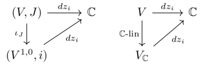

Berger classification and remarks on parallel structures
Table of Contents
The PDF version of this page can be downloaded by replacing html in the its address by
pdf.
For example /html/sheaf-cohomology.html should become /pdf/sheaf-cohomology.pdf.
This post is a part of the memoire of my M1 internship at I2M. The memoire contains, needless to say, less errors than this page.
1 Our story so far
De Rham decomposition theorem allows us to split a Riemannian manifold under certain conditions (complete and connected) as Riemannian product of complete connected manifold with irreducible holonomy representation. If an irreducible building block is locally symmetric, the theory of Lie groups developed by E. Cartan gave a complete list of holonomy of these spaces. We now shift our focus on non-symmetric irreducible manifolds.
2 Berger classification of non-symmetric irreducible manifolds
For a non-symmetric irreducible manifold, the holonomy representation has to be one of the following
- \(SO(n)\),
- \(U(m)\subset SO(2m)\),
- \(SU(m)\subset SO(2m)\),
- \(Sp(r) \subset SO(4r)\),
- \(SO(r)Sp(1) \subset SO(4r)\),
- \(G_2\subset SO(7)\),
- \(\text{Spin}(7)\subset SO(8)\).
where \(n=2m=4r\) is the (real) dimension.
Here are some notations, note always that \[ Sp(m)\subset SU(2m)\subset U(2m)\subset SO(4m) \]
- If \(Hol(g)\subset U(m)\subset SO(2m)\), \(g\) is called a Kähler metric.
- If \(Hol(g)\subset SU(m)\subset SO(2m)\), \(g\) is called a Calabi-Yau metric. We will see that a Calabi-Yau metric is a Kähler metric that is also Ricci-flat.
- If \(Hol(g)\subset Sp(m)\subset SO(4m)\) then \(g\) is called a hyperkähler metric.
- \(G_2\) and \(\text{Spin}(7)\) are called exceptional holonomies
To sum up: hyperkähler \(\longrightarrow\) Calabi-Yau \(\longrightarrow\) Kähler.
But what do we mean by \(U(n)\subset SO(2n)\)? To embed \(U(n)\) in \(SO(2n)\) one needs to identify \( \mathbb{C}\) and \( \mathbb{R}^{2n}\), this can be done using an almost complex structure \(J\) of \( \mathbb{R}^{2n}\). We will prove that when we change the almost complex structure, the embedded image of \(U(n)\) in \(SO(2n)\) always remains in the same conjugacy class, which corresponds to the fact that while holonomy representation is well-defined, the holonomy group in \(SO(2n)\) is only defined up to its conjugacy class.
3 Almost complex structure
A(n) (almost) complex structure \(J\) on a vector space \(V\) is an automorphism \(J:\ V\longrightarrow V\) with \(J^2 = -Id_V\). If \(V\) has a scalar product \(g\), we suppose in addition that \(g\circ J = J\).
A(n) (almost) complex structure \(J\) on manifold \(M\) is a vector bundle automorphism \(J: TM\longrightarrow TM\) that satisfies \(J_x^2 = -Id_{T_xM}\) for every \(x\in M\). If \(M\) is a Riemannian manifold, we assume in addition that \(g\circ J = g\).
Let us first have a look at a complex structure \(J\) on a fiber (vector space) \(V\). Here are some direct consequences:
3.0.0.1 Complexification.
\(g\) and \(J\) extend in an unique way over \(V_{ \mathbb{C}}\), the complexification of \(V\), to a Hermitian product \(g_{\mathbb{C}}\) and a \(\mathbb{C}\) -linear automorphism (also noted by \(J\)) and one still has \(g_{\mathbb{C}}\circ J = g_{\mathbb{C}}\).
3.0.0.2 Eigenspaces.
The complexified space \(V_{ \mathbb{C}}\) is decomposed to \(V_{\mathbb{C}} = V^{1,0} \oplus^\perp V^{0,1}\) where \(V^{1,0}\) and \(V^{0,1}\) are eigenspaces (complex vector space) corresponding to eigenvalues \(i\) and \(-i\) of \(J\) on \(V_{\mathbb{C}}\). The orthogonality is by \(g_{\mathbb{C}}\). The complex conjugate \(\sum z_i x_i \mapsto \sum \bar z_i x_i\) where \(z_i\in \mathbb{C}\) and \(x_i\in V\) maps \(V^{1,0}\) to \(V^{0,1}\). Their dimensions are therefore the same.
3.0.0.3 Hermitian form.
The fundamental form \(\omega\) of \((V,J)\) is defined by \[ \omega(a,b) = g(Ja,b) = -g(a, Jb) \quad \text{on } V \] which is an antisymmetric real 2-form with \(\omega\circ J = \omega\). \(V\) equipped with the following Hermitian form \[ h(a,b) = g(a,b) - i\omega(a,b) \quad \text{on } V \] in the sense that \(h(.,.)\) is \(\mathbb{R}\) -bilinear with \(h(Ja,b) = ih(a,b)\) and \(h(a,Jb) = -ih(a,b)\).
3.0.0.4 Identification.
One usually identifies \((V,J)\) and \((V^{1,0},i)\) as vector spaces equipped with complex structure, using the following map: \[ \iota_J: x \mapsto \frac{1}{2}(x - iJ(x)) \] which is \(\mathbb{C}\) -linear in the sense of complex structure: \(\iota_J(Jx) = i\iota_J(x)\). Note that \((V,-J)\) is also isomorphic to \((V^{0,1},i)\) by the conjugate of \(\iota_J\): \(x\mapsto \frac{1}{2}(x + iJ(x))\).
Now note that on we have on \((V,J)\) an hermitian product \(h(.,.)\) and on \((V^{1,0},i)\) the restricted Hermitian product \(g_{\mathbb{C}}\) of \(V_{\mathbb{C}}\). The following lemma gives their relation (the proof is straightforward computation, see Manuscript).
The identification \((V,J) = (V^{1,0},i)\) by \(\iota_J\) gives \[ \frac{1}{2}h = g_\mathbb{C}|_{V^{1,0}} \]
We can now embed \(U(n)\) to \(SO(2n)\), in other words \(U(V^{1,0})\) to \(SO(V)\) by the map \(\phi\mapsto \tilde\phi\) as follow:
\begin{tikzcd} V \ar["\iota_J", d] \ar["\tilde\phi", r] & V \ar["\iota_J", d] \\ V^{1,0} \ar["\phi", r] & V^{1,0} \end{tikzcd}Note that the correspondance \(\phi \leftrightarrow \tilde\phi\) is one-to-one between \(\{\phi:\ V^{1,0}\longrightarrow V^{1,0}\ \mathbb{R}\text{-linear}\}\) and \(\{\tilde\phi:\ V\longrightarrow V\ \mathbb{R}\text{-linear}\}\). Then
- \(\phi\) is \(\mathbb{C}\) -linear if and only if \(\tilde\phi J = J\tilde\phi\).
- \(\phi\) preserves \(g_{\mathbb{C}}\) if and only if \(\tilde\phi\) preserves \(h\). Taking the real and imaginary part, the latter is equivalent to the fact that \(\tilde\phi\) preserves \(g\) and \(\omega\).
- Every \(\mathbb{C}\) -linear \(\tilde \phi\) preserves orientation of \(V^{1,0}\) as \(\mathbb{R}^{2n}\) (note that the fact that \(\tilde\phi\) preserves orientation or not is independent of how one identifies \(V^{1,0}\) and \(\mathbb{R}^{2n}\)).
Hence for every \(J\), \(\phi\mapsto\tilde\phi\) gives a embedding of \(U(V^{1,0})\) to \(SO(V)\). An orthonormal base of \(V^{1,0}\) and that of \(V\) give a embedding \(U(n)\subset SO(2n)\).
The image of \(U(n)\) in \(SO(2n)\) may depends on \(J\) and the orthonormal base of \(V\), but its conjugacy class in \(SO(2n)\) is uniquely defined. This is because every complex structure \(J\) is, up to a orthonormal conjugation, \[ J_0 = \begin{pmatrix} 0 & I_n \\ -I_n & 0 \\ \end{pmatrix}. \]
4 Complexified dual and forms, prelude to Kähler geometry
We state first some linear algebra facts, whose proofs are tedious and can be consulted in the Manuscript.
- Let \(V = W_1 \oplus W_2\) be \(R\) -module then the exterior algebra of \(V\) splits into \[\bigwedge^nV = \bigoplus_{p+q = n}\bigwedge^p W_1 \otimes \bigwedge^q W_2 \] Note that the tensor product here is formal, and not related to the tensor product defining the exterior algebra.
- If \(V\) has a complex structure \(J\) then \(J\) gives a complex structure on \(V^* = Hom_{\mathbb{R}}(V, \mathbb{R})\), naturally by \(\phi\mapsto \phi\circ J\).
One has \[ (V^*)_{\mathbb{C}} = Hom_{\mathbb{R}}(V,\mathbb{C}) \equiv Hom_{\mathbb{C}}(V_{\mathbb{C}}, \mathbb{C}) \] and \[ (V^*)^{1,0} = Hom_{\mathbb{C}}((V,J), \mathbb{C}),\quad (V^*)^{0,1} = Hom_{\mathbb{C}}((V,-J),\mathbb{C}) \] where \(Hom_{\mathbb{C}}(V,\mathbb{C})\) denotes the set of \(\mathbb{R}\) -linear morphisms that preserves complex structures (\(\mathbb{C}\) is implicitly with the complex structure \(z\mapsto iz\))
Therefore \((V^*)_{\mathbb{C}} = (V^*)^{1,0} \oplus (V^{*})^{0,1}\) is rewriten as \[ Hom_{\mathbb{R}}(V,\mathbb{C}) = Hom_{\mathbb{C}}((V,J),\mathbb{C}) \oplus Hom_{\mathbb{C}}((V,-J), \mathbb{C}) \] Using the first point of Lemma 4, one has \[ \bigwedge^n (V^*)_{\mathbb{C}} = \bigoplus_{p+q=n}\bigwedge^{p,q}(V^*)_{\mathbb{C}} \] where \(big\wedge^{p,q}T^*_{\mathbb{C}}M\) denotes the \(\mathbb{C}\) -vector space of forms that are \(p\) times \( \mathbb{C}\) -linear and \(q\) times \( \mathbb{C}\) -antilinear.
Note one can easily find in \(V\) an orthonormal basis \(\partial_{x_i},\partial_{y_i}\) with \(J(\partial_{x_i}) = \partial_{y_i}\). We clarify here the definition and implicit identifications of basic objects such as \(dz_i\) and \(d\bar{z_i}\).
| Object | Where it belongs/ properties | Extension/ properties |
|---|---|---|
| \(\partial_{z_i} = \iota_J(\partial_{x_i})\) | \(V^{1,0}\), | \(dz_i(\partial_{z_j}) = \delta_{i,j}\), |
| \(\quad = \frac{1}{2}(\partial_{x_i}-i\partial_{y_i})\) | form a \( \mathbb{C}\) -base | \(dz_i(\partial_{\bar{z_j}}) = 0\) |
| \(\partial_{\bar z_i} = \iota_{-J}(\partial_{x_i})\) | \(V^{0,1}\), | \(d\bar{z_i}(\partial_{z_j}) = 0\), |
| \(\quad = \frac{1}{2}(\partial_{x_i}+i\partial_{y_i})\) | form a \( \mathbb{C}\) -base | \(d\bar{z_i}(\partial_{\bar{z_j}}) = \delta_{i,j}\) |
| \(dz_i = dx_i +idy_i\) | \(Hom_{\mathbb{C}}((V,J),\mathbb{C}) \equiv Hom_{\mathbb{C}}(V^{1,0}, \mathbb{C})\), | \(Hom_{\mathbb{C}}(V_{\mathbb{C}}, \mathbb{C})\), |
| \(\mathbb{C}\) -linear | null on \(V^{0,1}\) | |
| \(d\bar{z_i} = dx_i -idy_i\) | \(Hom_{\mathbb{C}}((V,-J), \mathbb{C}) \equiv Hom_{\mathbb{C}}(V^{0,1}, \mathbb{C})\), | \(Hom_{\mathbb{C}}(V_{\mathbb{C}}, \mathbb{C})\), |
| \(\mathbb{C}\) -antilinear | null on \(V^{1,0}\) | |
One can note that there are two natural ways to extend \(dz_i\) to \(V^{1,0}\)
- by first make a \( \mathbb{C}\) -linear extension on \(V_{\mathbb{C}}\), then make a restriction on \(V^{1,0}\)
- using the identification \((V,J)\equiv (V^{1,0},i)\)
but these two coincide, as there exists a unique form \( \mathbb{C}\) -linear \(dz_i\) that satisfies \(dz_i(\partial_{z_j}) = \delta_{i,j}, dz_i(\partial_{\bar{z_j}}) = 0\). Same story with \(d\bar{z_i}\). See Figure \ref{fig:dz} and Figure \ref{fig:dzbar}

Figure 1: Two natural ways to define \(dz_i\) on \(V^{1,0}\). They give the same form.
Figure 2: Two natural ways to define \(d\bar{z_i}\) on \(V^{0,1}\). They gives the same form.
The following properties are equivalent and \(X\) is called a Kähler manifold if one of them is satisfied.
- \(X\) is a complex manifold, equipped with a Hermitian structure \(h(.,.)\) compatible with the complex structure \(J\), and a fundamental form \(\omega\) with \(d\omega=0\).
- \(X\) is a Riemannian manifold with a parallel complex structure.
- \(X\) is a complex manifold, equipped with a Hermitian structure such that the Chern connection on \(T^{1,0}X\) is, up to an identification by \(\iota_J\), the Levi-Civita connection.
- \(X\) is a complex manifold, equipped with an Hermitian structure such that the Chern connection on \(T^{1,0}X\) is torsionless.
We call a complex manifold \(X\) of Kähler type if there exists a Hermitian structure under which \(X\) is Kähler.
The proof is straightforward. The only part that is not trivial is that a parallel almost complex structure has to come from a complex atlas, i.e. atlas of \(X\) such that each transition map preserves the complex structure. Such almost complex structures are called integrable.
To prove this one uses the following (1,2)-tensor called Nijenhuis tensor of a (1,1)-tensor \(A\), defined by: \[ N_A(X,Y) = -A^2[X,Y] +A[AX, Y] + A[X, AY] - [AX, AY] \] and the following theorem
An almost complex structure on \(M\) with vanishing \(N_J\) is integrable.
The proof that a parallel almost complex structure \(J\) has \(N_J = 0\) is computational in nature and can be found in the Manuscript.
5 Symplectic holonomy
One can look at symplectic group \(Sp(r)\) from the following two points of view:
- \(Sp(r)\) is subgroup of \(Aut_{\mathbb{H}}(\mathbb{H}^r)\) of elements preserving a quaternion Hermitian form \(q\), where \( \mathbb{H}\) is the algebra of quaternions.
- \(Sp(r) = SU(2r)\cap Sp(2r, \mathbb{C})\).
The second point of view explains how \(Sp(r)\) is embedded in \(SO(4r)\). Let us consider \(Sp(r)\) from the first point. In our context, let \(V\) be a tangent space at one point of the manifold \(M\), that is a \(4r\) real dimensional vector space, one can regard \(Sp(r)\) as the group of automorphisms of \(V\) preserving the Riemannian metric \(g|_V\) and the complex structures \(I,J\) (hence \(K=IJ\)) satisfying \(IJ = -IJ\). Hence we have the following remark:
The following properties are equivalent for a Riemannian manifold \(M\):
- \(Hol(M) \subset Sp(r)\subset SO(2r)\).
- There exists on \(M\) three parallel complex structures \(I,J,K\) that satisfy \(K = IJ = -JI\).
- There exists on \(M\) a parallel complex structure \(I\) and a holomorphic (w.r.t \(I\)), parallel, 2-form \(\varphi\) that is non-degenerate at a point (hence every point).
We note that the holomorphic 2-form in the third point is given by \[ \varphi = \omega_J + \sqrt{-1}\omega_K \] where \(\omega_I\) and \(\omega_K\) are fundamental forms with respect to complex structures \(I\) and \(K\), and \(M\) is regarded under the complex structure \(I\).
The implication (2) \(\implies\) (3) is actually exercise 1.2.5 (page 40) of Daniel Huybrechts, Complex geometry: an introduction (see Manuscript).
For the implication (3) \(\implies\) (2), note that the real and imaginary part of \(\varphi\) are parallel, they correspond to complex structures \(J\) and \(K\) on \(M\). Since \(\varphi\) is a (2,0)-form w.r.t \(I\), one has \(\varphi(Iu, v) = i\varphi(u,v)\), taking the real part and using the fact that \(g\) is non-degenerate, one has \(K = IJ = -JI\).